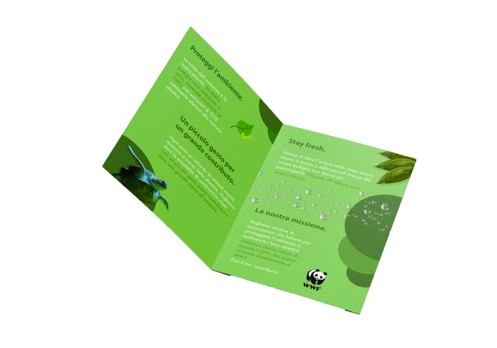

Ciao, il mio nome è Luciano Ungureanu.
Vivo a Sanremo ed ho 18 anni.
Fin da piccolo questo mondo mi ha rapito. Ho iniziato a suonare il pianoforte a sei anni e continuo a farlo, anche se solamente per hobby.
Sono innamorato della musica e nel tempo libero provo a produrre qualche beat o traccia EDM amatoriale. Ascolto quasi ogni genere musicale.Ho scoperto questo mondo da relativamente poco.
Ti dico solamente un nome che mi ha fatto scoprire quest’arte: Dain Walker, che omaggio con i colori di questo sito. Dato che sono anche appassionato di gaming sogno un giorno di disegnare interfacce per un videogame.Design 
Questo mondo è abbastanza nuovo per me, sono appassionato e sto cercando di assorbire più informazioni possibili in questo ambito.
La scintilla che ha fatto partire tutto si chiama Dain Walker, un Designer che è famoso per i suoi fantastici caroselli su Instagram. Adoro il minimalismo e piano piano sto scoprendo come creare design belli e funzionali, anche se la strada è ancora lunga.Per ora ho realizzato solamente un volantino per l’azienda di bottiglie riutilizzabili Lucch, ma presto ne arriveranno altri!